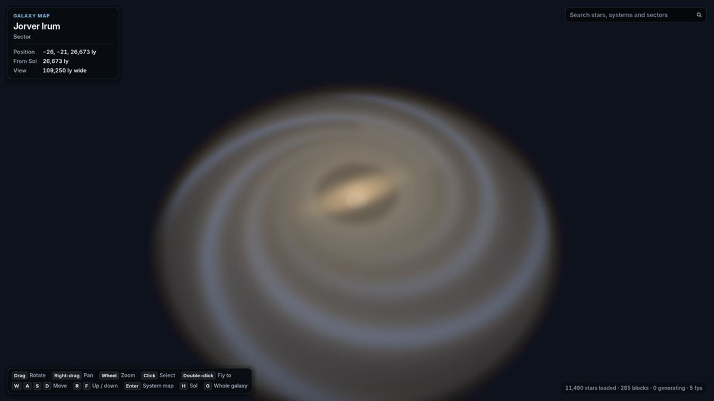
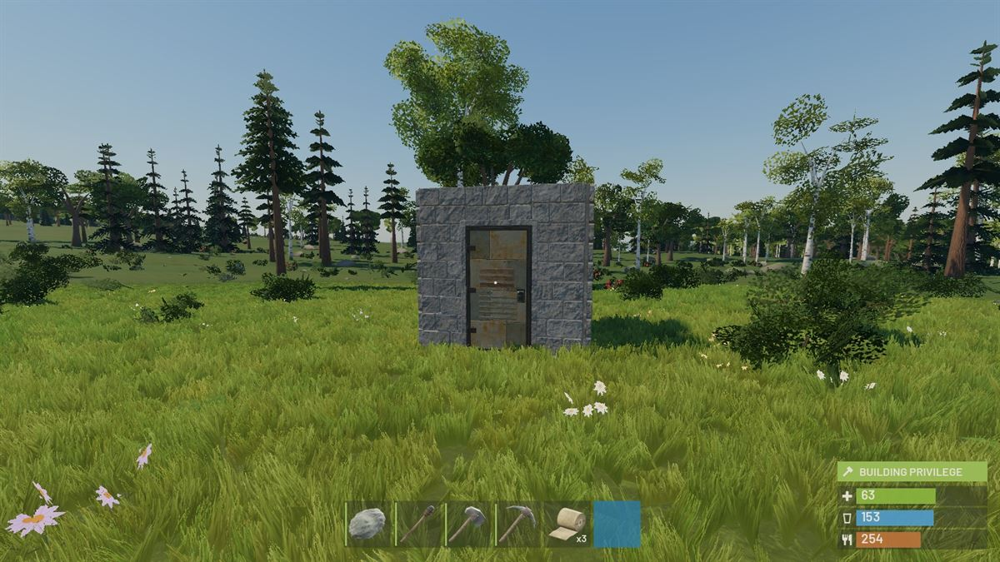
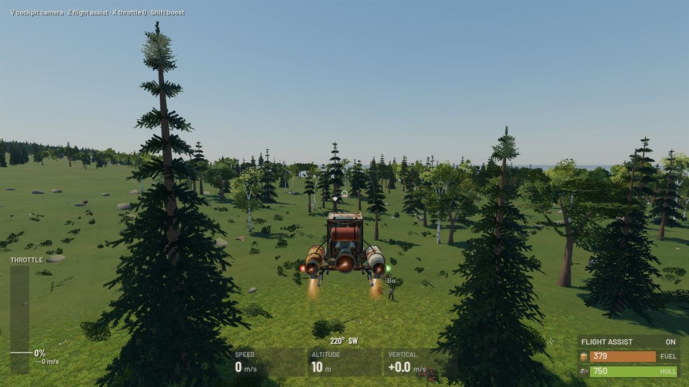

GameHollow Universe
Hollow Universe
An online survival game on real planets in a full-scale Milky Way. In development (pre-alpha).
- Godot
- C#
- .NET
- Multiplayer
- Procedural

You arrive on a beach with a rock and a torch. You chop trees, mine ore, craft tools and build a base that other players can, and will, try to blow open. One day you build a small ship and fly it to orbit, under the night sky of a galaxy where every star is a place you can go.
Every star is a place
- A 1:1 Milky Way, about 1.2 × 10¹¹ star systems generated on demand from one seed, each with a permanent address and a name.
- Real stars around Sol: about 100,000 from the HYG catalogue keep their real names and places.
- The same universe for everyone. Generation is deterministic to the bit on every machine, so the galaxy needs no download.

Survive, build, raid
- Gathering with skill, crafting and a tech tree, bases with structural stability, doors and code locks.
- Bullets with drop and drag, aimed with server-side lag compensation; every gun has a fixed, learnable recoil.
- Raids with charges, rockets and explosive rounds, and full loot.

Built to scale
A dedicated server in plain .NET runs each region of a planet at 30 ticks a second, with Jolt physics, and saves the world in SQLite. The client runs the same rules library as the server, so its movement prediction replays to the server's result bit for bit. Load tests run 100 bot players gathering, building, raiding, flying and fighting.
